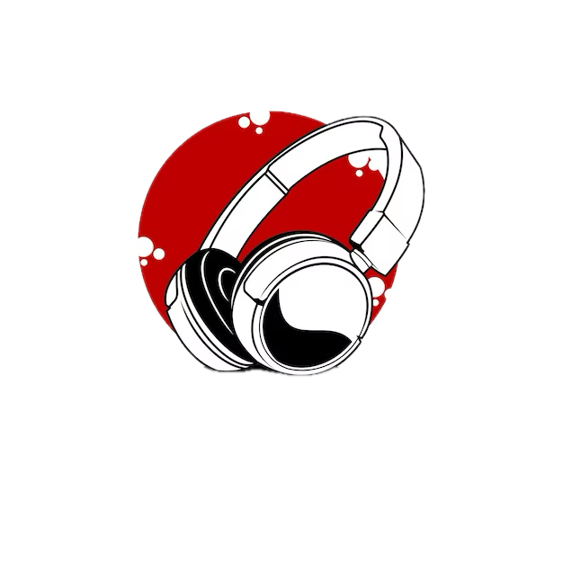

About Us
Welcome to the Music Store, a musical oasis nestled in the heart of our vibrant community. For over two decades, we have been the go-to destination for musicians of all levels, offering a vast selection of instruments, accessories, and expert advice. Our journey began with a passion for music and a dream to create a space where musicians could find everything they need to fuel their passion. Today, we continue to uphold that dream, providing a haven where musicians can explore, create, and connect. Our store is more than just a place to shop; it's a place to discover. Step inside, and you'll find yourself surrounded by a symphony of guitars, pianos, drums, and more, each waiting to tell its own musical story. Our friendly and knowledgeable staff are here to help you find the perfect instrument, whether you're a seasoned professional or just starting out. We believe that everyone deserves to experience the joy of making music, and we are committed to helping you find your sound. But our commitment doesn't end there. We are deeply rooted in our community, supporting local artists, schools, and music programs. We host workshops, performances, and events to inspire and educate musicians of all ages. We believe that music has the power to change lives, and we are dedicated to spreading its magic far and wide. So come join us at the Music Store, where every instrument has a story, and every musician is part of our family. Let's make music together.
